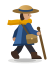

Send a courier down the mountain.
Mara carries a satchel of letters from Eagle Pass down to the sea. The walk takes one day. At every crossing she takes the southwest road or the southeast road, and every place she reaches pays her a few coins or costs her some.
She does not plan. She follows habits, a table of knobs, and you set them. Turn the knobs until a day on the road pays as well as it can.
Look at the map, turn the knobs, and send Mara down a few times to see what her habits earn.
1The map.
Fifteen places in a tree. Mara starts at the top, takes one road at each place and ends the day at the bottom. The coin on a place is what she gains (gold) or pays (orange) when she arrives. A road is as thick as the chance that she takes it, and the figure on it is the chance of taking that road from the place above.
2The knobs.
One knob for each of the two roads out of the seven places that have a choice. A higher knob makes that road likelier. Every knob starts at 0, and only the difference between the two knobs of a place matters.
| road | the place Mara stands in | ||||||
|---|---|---|---|---|---|---|---|
Tap a cell, a place on the map or a figure on a road to select it, then press + or − in the bar below, or type a number there.
3The probabilities.
Each column turns its two knobs into two chances that add up to 100%: Mara takes e to the power of each knob and divides by the column’s total. A knob raised by 1 makes its road about 2.7 times as likely, compared with the other road of the place.
| road | chance in % | ||||||
|---|---|---|---|---|---|---|---|
4Coins per day.
Untouched knobs: 0 coins. Best possible: 0. The number is exact: it adds up the eight days Mara can have, each weighted by its probability.
How is the average computed?
Every day ends at one of the eight places at the bottom. For each of them the page multiplies the chances of the three roads Mara takes to get there, multiplies by the coins she collects on the way, and adds the eight results. Nothing is simulated, so the number never jiggles.
5Send Mara down.
Each row is one day. Mara leaves Eagle Pass and takes three roads. Each step shows the place she reached, the coins there and, underneath, how that road compares with her average road from the place before.
You turned a knob after these days were played.
Tap a step to select its knob. The small blue and orange numbers on the knobs in step 2 count the better and the worse roads taken in these days.
What does the number under a place mean?
At each fork Mara has an average road: her two roads weighted by her chances. The number says how many coins more (blue) or fewer (orange) the road she took is worth than that average, counting the coins at the place and everything she can expect afterwards. Raising the knob of a blue road raises the coins a day, and so does lowering the knob of an orange one.